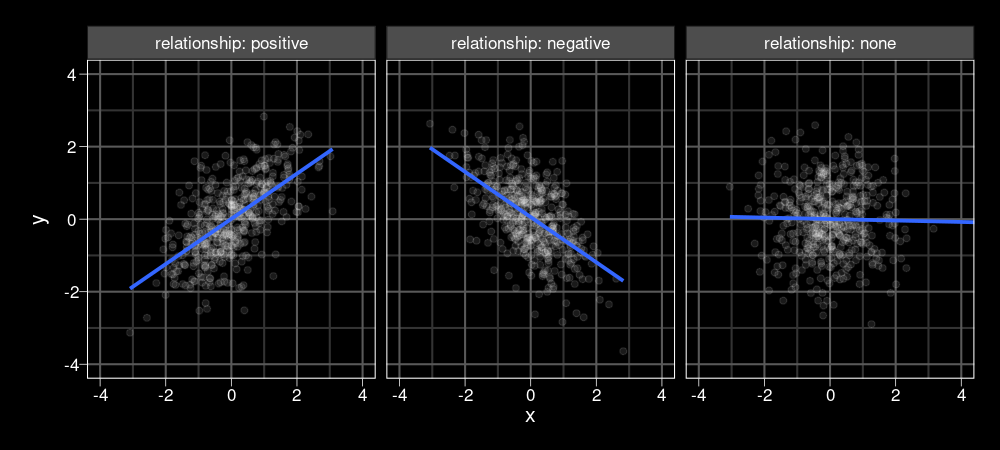
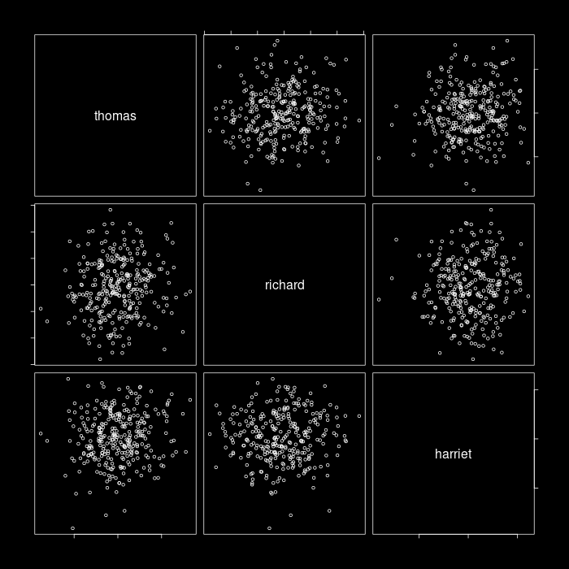
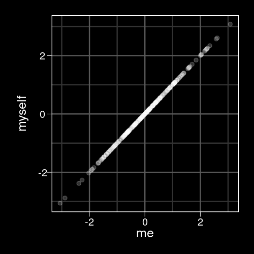
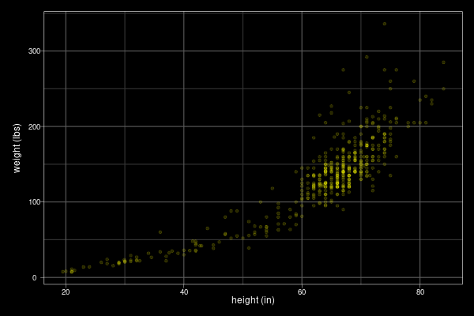
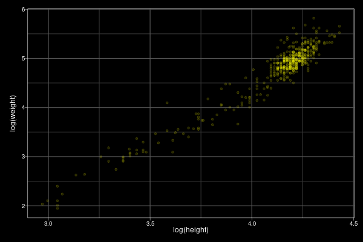
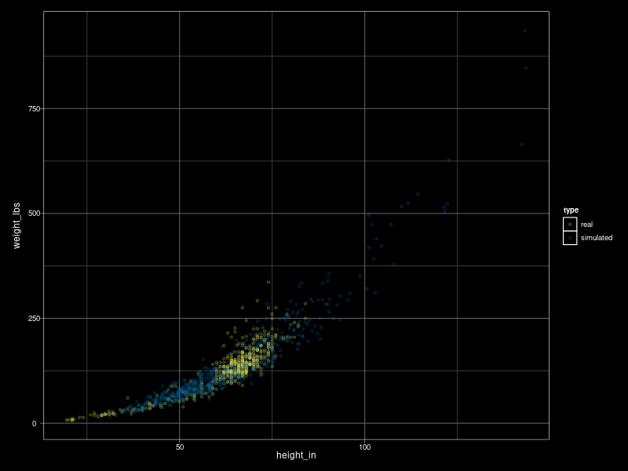

As of Oct 10:



Typicaly denoted as \(\rho\) (Greek symbol ’rho’) or \(r\)
\(-1 \ge r \le 1\)
Estimated using Pearson or Spearman (rank) method.
In R: cor(), cor.test()
For \(n\) variables, you have
\[\frac{n!}{2(n - 2)!}\]
unique pairwise relationships, where \(n!\) is the factorial of \(n\).
In R: choose(n, 2).
| IQ | verbal fluency | digit span | |
|---|---|---|---|
| IQ | 1.00 | 0.56 | 0.43 |
| verbal fluency | 0.56 | 1.00 | -0.23 |
| digit span | 0.43 | -0.23 | 1.00 |
In R: corrr::correlate()
| IQ | verbal fluency | digit span | |
|---|---|---|---|
| IQ | |||
| verbal fluency | 0.56 | ||
| digit span | 0.43 | -0.23 |
To simulate bivariate (or multivariate) data in R, use MASS::mvrnorm().
mvrnorm(n, mu, Sigma, ...)
You need the following information:
height and weight measurements for 435 people, taken from here


| \(\bar{X}\) | 4.11 |
| \(\bar{Y}\) | 4.74 |
| \(\sigma_{X}\) | .26 |
| \(\sigma_{Y}\) | .65 |
| \(\rho_{XY}\) | .96 |
\(\mathbf{\Sigma}\)
A square matrix that characterizes the variances and their interrelationships (covariances).
Must be symmetric and positive definite
| \(\sigma_{X}\) | .26 |
| \(\sigma_{Y}\) | .65 |
| \(\rho_{XY}\) | .96 |
MASS::mvrnorm()my_cov <- .96 * .26 * .65 my_Sigma <- matrix(c(.26^2, my_cov, my_cov, .65^2), ncol = 2) my_Sigma
[,1] [,2]
[1,] 0.06760 0.16224
[2,] 0.16224 0.42250
set.seed(62) # so we get the same numbers ## DON'T put library(MASS) in your script! newpeeps <- MASS::mvrnorm(6, mu = c(height = 4.11, weight = 4.74), Sigma = my_Sigma) newpeeps
height weight
[1,] 4.254209 5.282913
[2,] 4.257828 4.895222
[3,] 3.722376 3.759767
[4,] 4.191287 4.764229
[5,] 4.739967 6.185191
[6,] 4.058105 4.806485
The exp() function is the inverse of log().
exp(newpeeps)
height weight
[1,] 70.40108 196.94276
[2,] 70.65632 133.64963
[3,] 41.36254 42.93844
[4,] 66.10779 117.24065
[5,] 114.43045 485.50576
[6,] 57.86453 122.30092

bivariate app\(Y_i = \beta_0 + \beta_1 X_i + e_i\)
\(e_i \sim N\left(0, \sigma^2\right)\)
\(\beta_1 = \rho_{XY}\frac{\sigma_Y}{\sigma_X}\)
\(\beta_0 = \bar{Y} - \beta_1\bar{X}\)